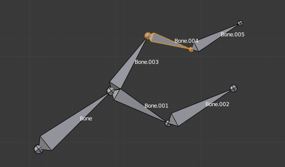
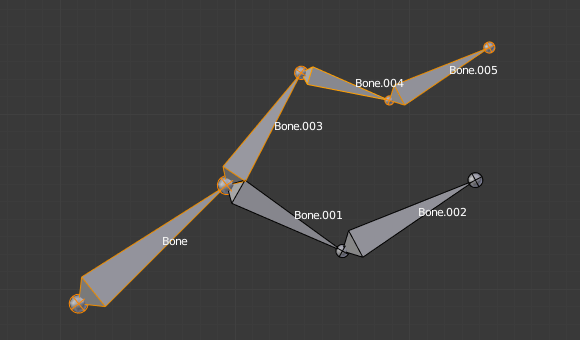

Виділення -- Selecting¶
Ви можете виділяти та редагувати кістки арматур у Режимі Правки -- Edit Mode та Режимі Пози -- Pose Mode. Тут, ми побачимо, як виділяти кістки у Режимі Правки -- Edit Mode. Виділення кісток у Режимі Пози -- Pose Mode є подібним до виділення їх у Режимі Правки -- Edit Mode з кількома відмінностями, що будуть детально описані тут -- posing part.
Similar to vertex/edge selection in meshes, there are two ways to select whole bones in Edit Mode:
- Безпосередньо, через виділення тіла кістки.
- Через виділення її обох суглобів (кореня та верхівки).
Це важливий момент для розуміння, оскільки виділення одного із суглоба кісток може призвести до не очевидної поведінки з очікуванням того, що ви виділили кість, на яку дивитеся.
Зауважте, що на відміну від типу прорису сіті, тип прорису арматури не здійснює ніякого впливу на поведінку виділення. Іншими словами, ви можете виділяти суглоб або тіло кістки однаково, незалежно від обраної візуалізації кістки.
Виділення суглобів кісток¶
Для виділення суглобів кісток ви маєте стандартні методи виділення -- standard selection.
Inverse Selection¶
Як зазначено вище, ви повинні пам'ятати, що ці засоби виділення призначені тільки для суглобів кісток, а не для тіл кісток.
Наприклад, опція виділення «Інверсія» -- Inverse за Ctrl-I інвертує виділення суглобів кісток, а не самих кісток (дивіться ілюстрацію Inverse selection).
Пам'ятайте, що кістка є виділеною, тільки якщо обидва її суглоби виділені. Тому, коли стан виділення суглобів кісток інвертується, то виділяється новий набір кісток.

The result of the inverse selection Ctrl-I: The bones joints selection has been inverted, and not the bones selection. |
{kind=link}
Selecting Connected Bone Joints¶
Інший приклад: коли ви виділяєте корінь кістки, що з'єднана з її предком, ви також неявно виділяєте верхівку її предка (і навпаки).
Ghi chú
Пам'ятайте, що коли виділені суглоби кісток, то верхівка предківської кістки є «тим самим, що» й корінь її нащадкових кісток.
Виділення кісток¶
By RMB-clicking on a bone's body, you will select it (and hence you will implicitly select its root and tip).
Використавши Shift-RMB, ви можете додавати у/вилучати з цього виділення.
Ви також маєте деякі опції просунутого виділення на основі їх відношень.
Ви можете виділяти зараз усі кістки у ланцюгу, до якого належить активна (останньо виділена) кістка за допомогою засобу пов'язаного виділення, L.

Виділення одиничної кістки. |

Цей ланцюг цілком виділено за допомогою L. |
{kind=link}
{kind=link}
- Дзеркалення -- Mirror Shift-Ctrl-M
- Перевертає виділення з одного боку на інший.
- Вказати Найкоротший Шлях -- Pick Shortest Path Ctrl-RMB
- Виділяє шлях від активної кістки до кістки під вказівником миші.
Deselecting Connected Bones¶
Існує тонкість щодо з'єднаних кісток.
Коли ви маєте виділеними одночасно кілька з'єднаних кісток, якщо ви зневиділете одну з них кістку, то зневиділиться лише її верхівка, а не корінь, який є також верхівкою для іншої виділеної кістки.
Для зрозуміння цього погляньте на Ілюстрацію Зневиділення кістки у виділеному ланцюгу..
After Shift-RMB-clicking "Bone.003":
- Верхівка "Bone.003" (яка є одночасно коренем для кістки "Bone.004") зневиділяється.
- "Bone" є предком для кістки "Bone.003". Тому, корінь "Bone.003" є тим самим, що й верхівка "Bone". Оскільки, "Bone" залишається виділеною, то її верхівка також виділена. А тому, корінь "Bone.003" також залишається виділеним.
Більше -- More / Менше -- Less¶
Орієнтир -- Reference
| Mode: | Edit Mode |
|---|---|
| Menu: |
- Більше -- More Ctrl-NumpadPlus
- Expand the current selection to the connected bones.
- Менше -- Less Ctrl-NumpadMinus
- Contrast the selection, deselect bones at the boundaries of each selection region.
- Предок -- Parent [, Нащадок -- Child ]
- Ви можете зневиділяти активну кістку та тут же виділяти її предка або одного з її нащадка.
- Розшир до Предка -- Extend Parent Shift-[, Розшир до Нащадка -- Extend Child Shift-]
- Подібно до «Предок» -- Parent / «Нащадок» -- Child, але зберігає виділену кістку у виділенні.
Подібне -- Similar¶
Орієнтир -- Reference
| Mode: | Edit Mode |
|---|---|
| Menu: | |
| Hotkey: | Shift-G |
- Нащадки -- Children
- Розширює виділення на усі ієрархічно нащадкові кістки.
- Найближчі Нащадки -- Immediate Children
- Розширює виділення на усі прямі нащадкові кістки.
- Спільнопредкові -- Siblings
- Виділяє кістки, що мають спільного предка і це дана активна кістка.
- Довжина -- Length
- Виділяє кістки з подібною довжиною кістки (між верхівкою та коренем) у межах заданого Порогу -- Threshold.
- Напрям (вісь Y) -- Direction (Y axis)
- Select bones aligned on the Y axis (along the bones length).
- Префікс -- Prefix
- Select bones with matching name prefix (separated by
.). - Суфікс -- Suffix
- Select bones with matching name suffix (separated by
.). - Шар -- Layer
- Select bones on the same layer.
- Group
- Select bones in the same group.
- Shape
- Select bones using the same shape object (in pose mode).